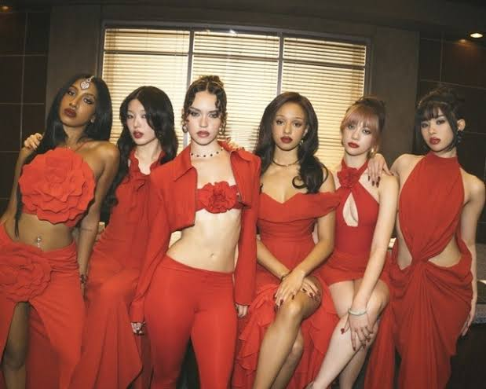
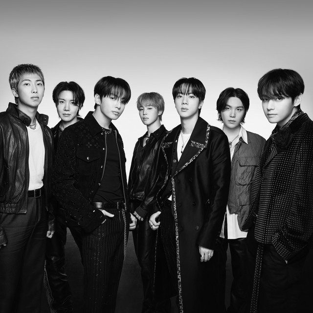
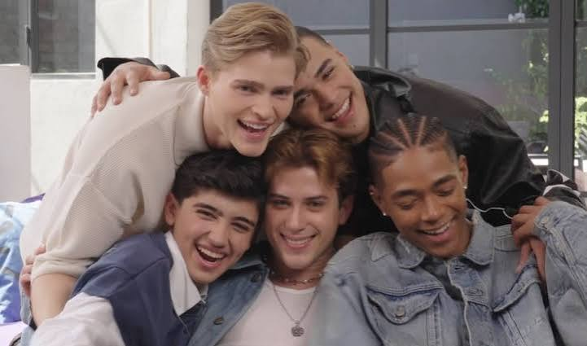
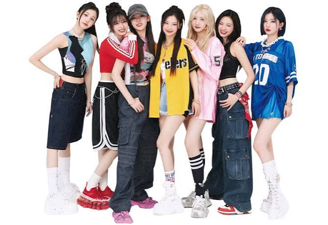
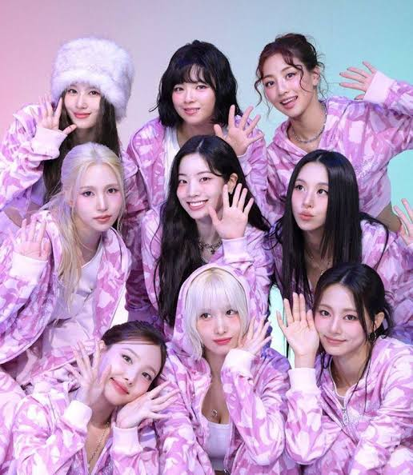
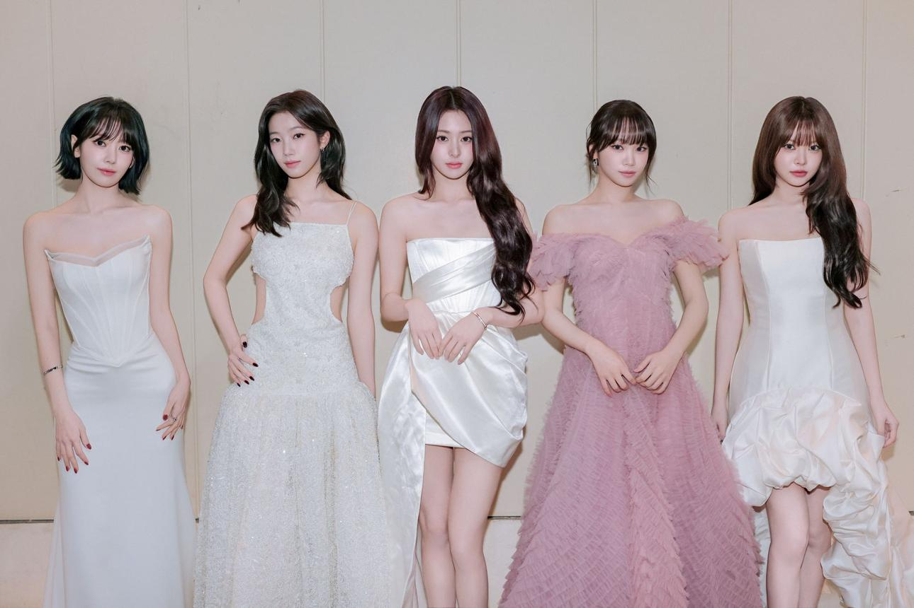
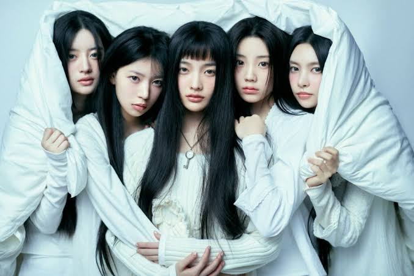

Una pequeña colección de mis grupos favoritos, sus integrantes, canciones y bias. En celular puedes deslizar la tabla horizontalmente.
| Nombre del grupo | Nombre de l@s integrantes | Imagen | Canciones | Fecha de debut | Canción favorita | Bias |
|---|---|---|---|---|---|---|
| BLACKPINK | Lisa, Jennie, Jisoo, Rosé | Love to Hate Me, Jump, Shut Down, Pink Venom, Playing with Fire | 8 de agosto de 2016 (YG) | STAY | Jennie | |
| KATSEYE | Daniela, Lara, Megan, Yoonchae, Sophia, Manon |  | Gabriela, Internet Girl, Pinky Up, Debut | 28 de junio de 2024 | GNARLY | Yoonchae y Lara |
| BTS | RM, Jungkook, Suga, Jin, J-Hope, Jimin, V |  | Dynamite, Butter, SWIM, Mic Drop | 13 de junio de 2013 (HYBE) | DYNAMITE | V y Jin |
| SANTOS BRAVOS | Drew, Alejandro, Gabi, Kauê, Kenneth |  | Velocidade, Kawasaki, MHM, FE, 0% | 21 de octubre de 2025 | KAWASAKI | Gabi |
| BABYMONSTER | Ruka, Pharita, Asa, Ahyeon, Rami, Rora, Chiquita |  | SHEESH, DRIP, PSYCHO, HOT SAUCE, FOREVER | 27 de noviembre de 2023 (YG) | DRIP | Ahyeon |
| TWICE | Nayeon, Jeongyeon, Momo, Sana, Jihyo, Mina, Dahyun, Chaeyoung, Tzuyu |  | This Is For, Strategy, What Is Love?, The Feels | 20 de octubre de 2015 (JYP) | THIS IS FOR | Dahyun |
| LE SSERAFIM | Sakura, Kim Chaewon, Huh Yunjin, Kazuha, Hong Eunchae |  | SPAGHETTI, ANTIFRAGILE, FEARLESS | 2 de mayo de 2022 (HYBE) | SPAGHETTI | Sakura |
| ILLIT | Yunah, Minju, Moka, Wonhee, Iroha |  | Magnetic, Cherish (My Love), Tick-Tack, I'll Like You | 25 de marzo de 2024 (BELIFT LAB) | It's Me | Yunah |